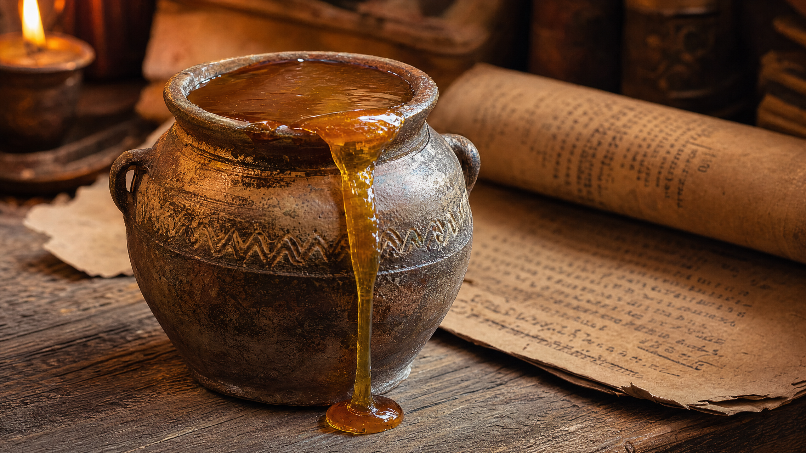

Az elfeledett "Arany Kód": Miért őrizték a fáraók ezt a titkot évezredeken át?

Nézze meg a felfedezésről szóló videótA történelemkönyvek gyakran elhallgatják a legfontosabb részleteket. Régészek nemrégiben olyan tekercsekre bukkantak, amelyek egy különleges "méz-mechanizmusról" beszélnek, amelyet az ókori uralkodók használtak szellemi erejük megőrzésére.
Ez nem csupán egy édesítőszer volt számukra. Úgy tekintettek rá, mint az "elme üzemanyagára", amely képes volt élesen tartani a memóriát még a legidősebb korban is. A modern tudomány most kezdi kapizsgálni, miért volt igazuk.
A nagyvállalatok évtizedek óta próbálják szintetizálni ezt a hatást, de a természetet nem lehet becsapni. A titok nem egy laboratóriumban rejlik, hanem egy egyszerű, 30 másodperces reggeli szokásban.
Magyarországon is egyre többen fedezik fel ezt az elfeledett módszert. Az eredmények? Tisztább gondolatok, visszatérő emlékek és egy olyan mentális frissesség, amit sokan már elveszettnek hittek.
Készen áll arra, hogy feltárja ezt az ősi titkot, és visszakapja elméje élességét? Egy exkluzív prezentációban mindent elmesélünk.
Kattintson ide a titok feltárásához